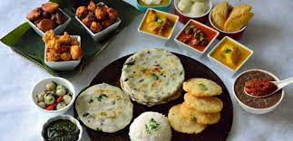

Chttisgarh:
Food:
The Staple Food of Chhattisgarh includes Wheat, Millets, Rice flour, High Protein Lentils,
Bajra, Maize and Jawar. The food cuisine of Chhattisgarh is influenced by its neighboring
state Jharkhand and their Food cuisine.
Vegetation:

The vegetation of Chhattisgarh includes the vast stretch of forests. About 44% of the total
area of Chhattisgarh is covered by forest. The trees that are mostly found in the state are
Sal, Bamboo, Teak, and trees of mixed deciduous variety. The soil
of Chhattisgarh is rich and is known for its red color.
Climate:

The climate of Chhattisgarh is tropical. It is hot and humid because of its proximity
to the Tropic of Cancer and its dependence on the monsoons for rains. Summer temperatures in Chhattisgarh
can reach 45 °C (113 °F). The monsoon season is from late June to October and is a welcome respite from the heat.